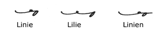
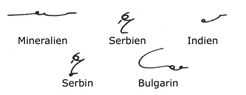
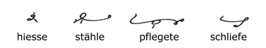
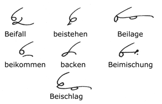
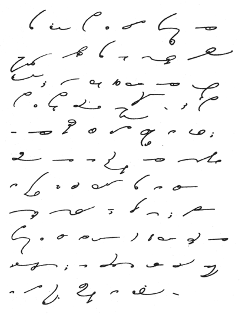

Some Miscellaneous Rules
The connecting syllable
of joined words is usually omitted. Ease of joining will
generally determine the point. If the writing of the first
word in full makes joining difficult, then there is the choice
of the above rule (which is preferable) or disconnecting.

The JE loop
occurs occasionally medially and finally.

Final IEN
is represented by N alone, but the feminine IN
is written in full (see Paragraph
55).

The final E
of the preterite subjunctive (or imperfect subjunctive) is written.
The is not essential when the root vowel changes for the subjunctive,
but it is better to make the rule invariable.
The narrow loop with
a horizontal dash over it represents JU. Long U
may be distinguished from short U by the dash underneath.
Nouns ending in EN
in the nominative singular write the N throughout the
declension.
The prefix for FORT
is the natural extension of the prefix VOR.

BEI as a
prefix is written distinctively where possible. The necessity
is clearly seen in the two words beikommen and backen.
Reading Exercise

TRANSCRIPTION of Quotation from Jane
Eyre
Bis hierher
habe ich jede Begebenheit meines unbedeutenden Daseins bis ins
kleinste Detail geschildert; den ersten zehn Jahren meines Lebens
habe ich ebenso viele Kapitel gewidmet; es ist aber nicht meine
Absicht, eine ordentliche Autobio-graphie zu schreiben: ich fühle
mich nur verpflichtet, mein Gedächtnis zu befragen, wo seine
Antworten bis zu einem gewissen Grade Interesse bieten können;
darum übergebe ich einen Zeitraum von acht Jahren fast mit
Stillschweigen; nur wenige Reihen sind notwendig, um die Verbindung
aufrecht zu erhalten.
- Next Page -
|